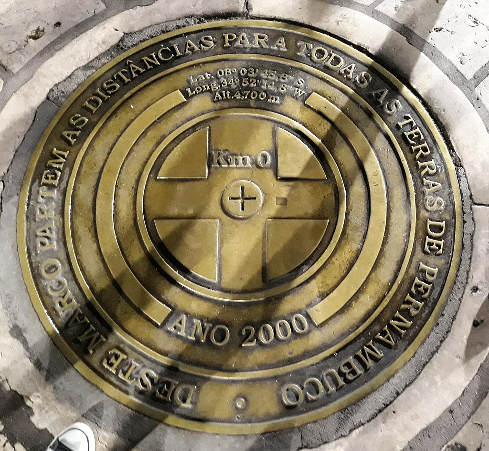

Letreiro de Recife, localizado no Marco Zero.
No coração da capital Recife, no bairro de mesmo nome, encontra-se o
Marco Zero, um incrível ponto turístico simbolizando
não só o centro geográfico da cidade, mas também o ponto de partida
para explorar sua riqueza cultural e histórica.
Sobre
Na lateral da praça, encontra-se a estátua do Barão do Rio Branco em
bronze, com 2,8 metros de altura, do escultor Feliz Charpentier. Já no
centro, pode ser vista a rosa dos ventos do píntor Cícero Dias. Nos
períodos de momo, a praça funciona como quartel general do carnaval
multicultural de recife.

Visão aberta da Praça do Marco Zero, em destaque a rosa dos
ventos do pintor pernambucano Cícero Dias, no piso da praça.
A praça tem o nome original de Praça Barão do Rio Branco, contudo,
ficou conhecida como Praça do Marco Zero pelo fato de que nela se encontra
o quilômetro zero das estradas de Pernambuco:

Marco Zero. Lê-se: Deste marco partem as distâncias para
todas as terras de Pernambuco
.
Para outras programações e pontos turísticos, confira também o Recife Antigo!